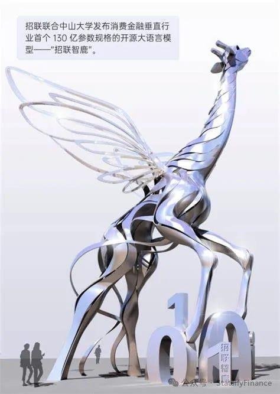
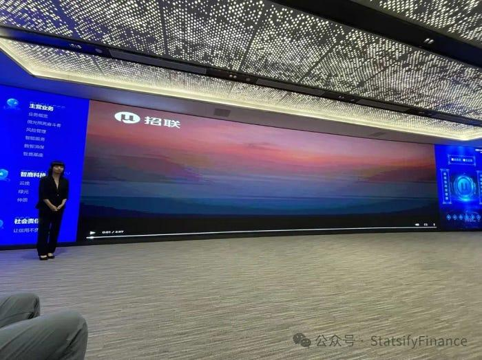
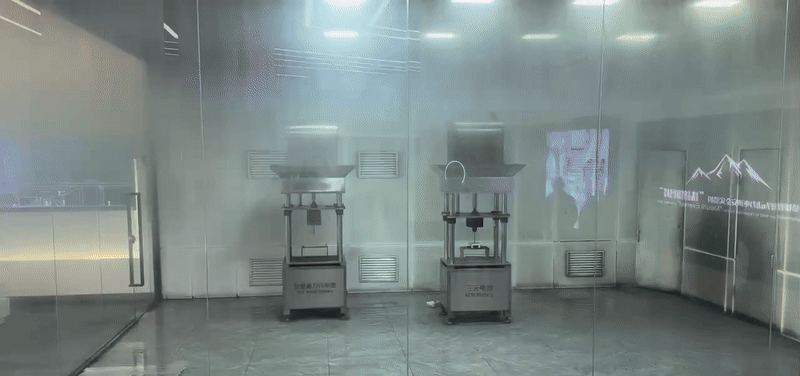
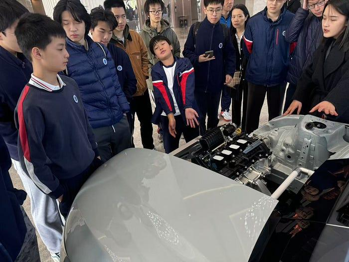
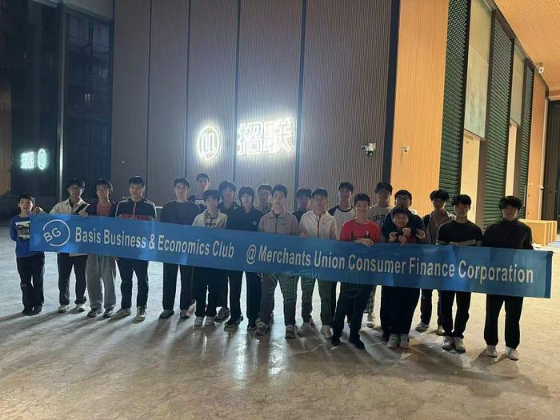
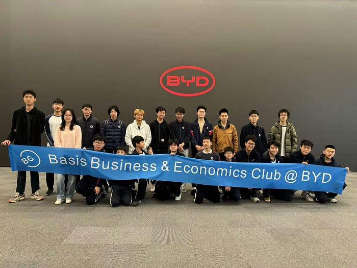

To help our club members understand how different companies operate and think about growth, we organized site visits to two well-known firms in Shenzhen: Merchants Union Consumer Finance Company Limited (MUCFC) and BYD. Seeing their day-to-day work up close widened our perspective and gave us ideas for future career planning.
About MUCFC
MUCFC is a joint venture between China Merchants Bank and China Unicom. It specializes in consumer finance, offering credit-based installment products and unsecured loans. By applying big data and AI technologies, MUCFC delivers fast, secure financial solutions to individual consumers.
About BYD
BYD is a global high-tech company operating across electronics, automotive, new energy, and rail transit. Rooted in independent innovation, BYD focuses on R&D and sustainable practices to support greener mobility and intelligent transport systems.
Visit to MUCFC
Our first stop was MUCFC. Company representatives gave us a clear overview of how the consumer finance sector is evolving and how the firm uses fintech to raise service standards. A focal point was Zhilù AI, MUCFC's in-house intelligent risk control platform built on large-scale data and machine learning. It enables real-time credit scoring and risk management.

We saw how Zhilù AI creates detailed user profiles to tailor financial services for individuals. MUCFC also demonstrated how this technology has been extended to optimize garbage collection routes in urban areas — cutting traffic congestion, lowering operational costs, and reducing carbon emissions. This reflects the company's commitment to ESG (Environmental, Social, and Governance) goals.
Another key product was Haoqidai, which supports micro-merchants by offering small, flexible loans to bridge funding gaps. This has helped many small business owners stay afloat while boosting local economic vitality.
Together, these technologies and products gave us a grounded view of how MUCFC supports inclusive finance, social responsibility, and sustainability in action.

Visit to BYD
We then visited BYD's core manufacturing site, where we learned about its four major sub-brands:
- Dynasty Series: Affordable, tech-mature EVs for family use (models like Qin, Song, and Tang).
- Yangwang: High-performance luxury EVs.
- Fangchengbao: Off-road electric vehicles with strong power systems.
- DENZA: A premium brand co-developed with Mercedes-Benz, focused on executive travel.
We were invited to test-drive several models and could clearly feel the differences in design, user experience, and embedded technologies.
What stood out most was a battery safety demo. In a controlled test room, staff punctured BYD's Blade Battery and a conventional EV battery side by side. The conventional cell exploded into sparks. The Blade Battery didn't — zero combustion. That clarity on safety left a deep impression.

Conventional EV Battery
BYD Blade Battery
BYD also walked us through their broader sustainability efforts — from global EV deployment to green manufacturing techniques. Their New Materials division explores lightweight, recyclable, and high-performance alternatives (e.g., aluminum for copper, plastics for steel, adhesives for welding), creating material systems optimized for next-gen EVs. These innovations improve product safety and advance global sustainability goals.

Reflections
These visits were deeply educational for our club. At MUCFC, we saw how AI and big data are reshaping consumer finance, and how tech can advance social responsibility and ESG goals. At BYD, we witnessed how relentless innovation drives competitiveness — especially in the EV space, where safety and tech breakthroughs are critical.
The biggest takeaway was this: connecting theory to real-world practice changes how we think. We walked away with clearer views of the different career paths in finance and technology, and a deeper motivation to pursue learning through observation, exploration, and thoughtful engagement.

